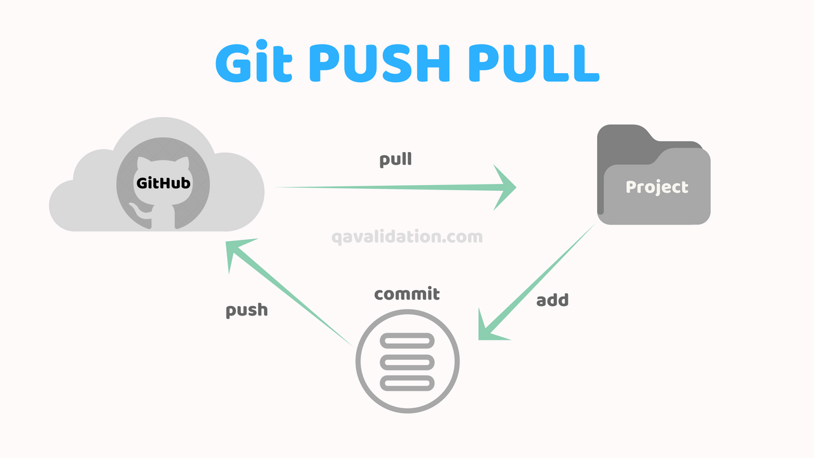

Git
Git ist ein so genanntes Versionierungssystem, das heutzutage fast immer von Entwicklern eingesetzt wird. Vor allem, wenn mehrere Personen zusammen arbeiten oder man an einem größeren Projekt arbeitet. Es hilft dabei:
- zu sehen, wer was gemacht hat.
- zu sehen wann, was, von wem, an welchen Dateien geändert wurde.
- zu einer früheren Version zurückzukehren. Beispielsweise, wenn man einen Fehler hat und nicht weiß was das Problem ist, dann kann man sich vorherige Versionen ansehen und herausfinden, was genau geändert wurde.
Repository
Github ist eine Plattform, auf der Entwickler gratis ihre Projekte speichern können. Einzige Bedingung dafür, dass es gratis bleibt, ist dass diese Projekte öffentlich zugänglich sein müssen. Dadurch ist eine große Community entstanden und auf Github findet man jede Menge an fertig entwickelten Programmen, die man verwenden kann, oder wo man Dinge abschauen kann. Auf github landet man auch immer wieder, wenn man nach Fehlern googled. Es ist im Prinzip ein riesiges Forum, auf dem Entwickler Fragen stellen können und sich gegenseitig helfen.
Das Projekt, das du gerade liest liegt auch auf github. So ein Projekt, das Programmiercode enthält wird auch Repository genannt.

Auf diesem Bild siehst du die so genannten Commits, die am Repository gemacht wurden. Jedes mal, wenn ich etwas mache und mit einem Teil fertig bin, dann nehme ich meine geänderten Dateien, geb dem Ganzen einen Namen und lade es hoch. Das ganze Paket nennt man einen Commit.
Ein Commit besteht aus:
- Name - dieser sollte grob beschreiben, was geändert wurde
- Geänderte Code-Zeilen
- Entwickler
- Datum und Uhrzeit
Pushen und Pullen
Das Prinzip von der Arbeitsweise mit git ist, dass man sein Repository auf einem Server speichert und sich eine Kopie davon auf seinen Computer holt und alle Änderungen dann immer wieder auf den Server hochlädt.
Ein Server ist nichts anders als ein Computer, nur dass er halt irgendwo in einem Kämmerchen rumsteht und darauf ausgelegt ist dein Projekt übers Internet zugänglich zu machen.
Das tolle an git ist, dass so mehrere Entwickler an einem Projekt arbeiten können. Jeder hat eine Kopie vom Projekt auf seinem Computer und pusht, so nennt man das, wenn man Änderungen hochlädt, Änderungen auf den Server.
Gibt es auf dem Server Neuigkeiten, die ich noch nicht auf meinem Computer habe kann ich sie mir herunterladen. Das nennt man auch pull.
So können mehrere Entwickler gleichzeitig an einem Projekt arbeiten und git kümmert sich darum, dass alle über Änderungen informiert werden und fügt die Änderungen alle am Server zusammen.
Klonen
Ich hab vorhin schon von einer Kopie gesprochen und genau das werden wir jetzt machen. Wir holen uns eine Kopie von diesem Projekt auf deinen Rechner. Man nennt das auch klonen.
Wir werden das ganze im Terminal oder auch Kommandozeile machen. Die kennst du eh schon und kannst damit gut umgehen und gerade am Anfang ist es besser das so zu machen, damit du ein bisschen besser das git Prinzip verstehst. Später, wenn du git schon verinnerlicht hast kann ich dir ein Programm dafür zeigen, dann musst du das nicht mehr in der Kommandozeile machen.
1. Ordner erstellen
Zuerst erstelle bitte einen Ordner auf deinem Computer, in dem du alle deine Projekte speichern möchtest. Bei mir heißt der Ordner Code.
2. In Ordner navigieren
Nun müssen wir in der Kommandozeile in diesen Ordner wechseln, damit wir dort Aktionen ausführen können. Ich weiß nicht genau, wie das auf Windows ist. Sollte es da Probleme geben können wir uns das auch gemeinsam ansehen.
Bei mir ist es so, dass wenn ich ein neues Terminal Fenster öffne startet es in meinem Benutzer-Ordner. Mein "Code" Ordner befindet sich in diesem Ordner. Daher kann ich mit dem Befehl cd Code in diesen Ordner wechseln.
2.1 Terminal nach dem Start
2.2 Terminal nach dem Start
2.3 Terminal nach dem Start
3. Repository klonen
Jetzt kommt der spannende Teil. Wir holen uns jetzt mit einem Befehl das Projekt, so wie es gerade auf dem Server bei github liegt auf deinen Computer. Auf github kannst du dir die Adresse zum Projekt kopieren.
Sie verbirgt sich hinter dem grünen Button "Clone or Download"
Befehl: git clone https://github.com/wubbel/wubbel.github.io.git

Wenn alles geklappt hat solltest du jetzt einen Ordner Wubbel in deinem Ordner haben und darin sollten sich ein paar Dateien befinden.